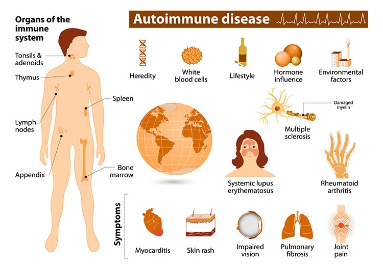

Autoimmune conditions

SYMPTOMS:
- Fatigue
-
Fever
-
Joint pain, stiffness and swelling
-
Butterfly-shaped rash on the face that covers the cheeks and bridge of the nose or rashes elsewhere on the body
-
Skin lesions that appear or worsen with sun exposure
-
Fingers and toes that turn white or blue when exposed to cold or during stressful periods
-
Shortness of breath
-
Chest pain
-
Dry eyes
-
Headaches, confusion and memory loss
CAUSES
- Sunlight. Exposure to the sun may bring on lupus skin lesions or trigger an internal response in susceptible people.
Infections. Having an infection can initiate lupus or cause a relapse in some people.
-
Medications. Lupus can be triggered by certain types of blood pressure medications, anti-seizure medications and antibiotics. People who have drug-induced lupus usually get better when they stop taking the medication. Rarely, symptoms may persist even after the drug is stopped
DIAGNOSIS:
- Blood tests. Blood tests can determine if you have normal levels of infection-fighting proteins (immunoglobulin) in your blood and measure the levels of blood cells and immune system cells. Abnormal numbers of certain cells can indicate an immune system defect.
-
Blood tests can also determine if your immune system is responding properly and producing proteins that identify and kill foreign invaders such as bacteria or viruses (antibodies).
-
Prenatal testing. Parents who have a child with a primary immunodeficiency disorder might want to be tested for certain immunodeficiency disorders during future pregnancies. Samples of the amniotic fluid, blood or cells from the tissue that will become the placenta (chorion) are tested for abnormalities.
-
In some cases, DNA testing is done to test for a genetic defect. Test results make it possible to prepare for treatment soon after birth, if necessary.
TREATMENT
- Treatments for primary immunodeficiency involve preventing and treating infections, boosting the immune system, and treating the underlying cause of the immune problem. In some cases, primary immune disorders are linked to a serious illness, such as an autoimmune disorder or cancer, which also needs to be treated.